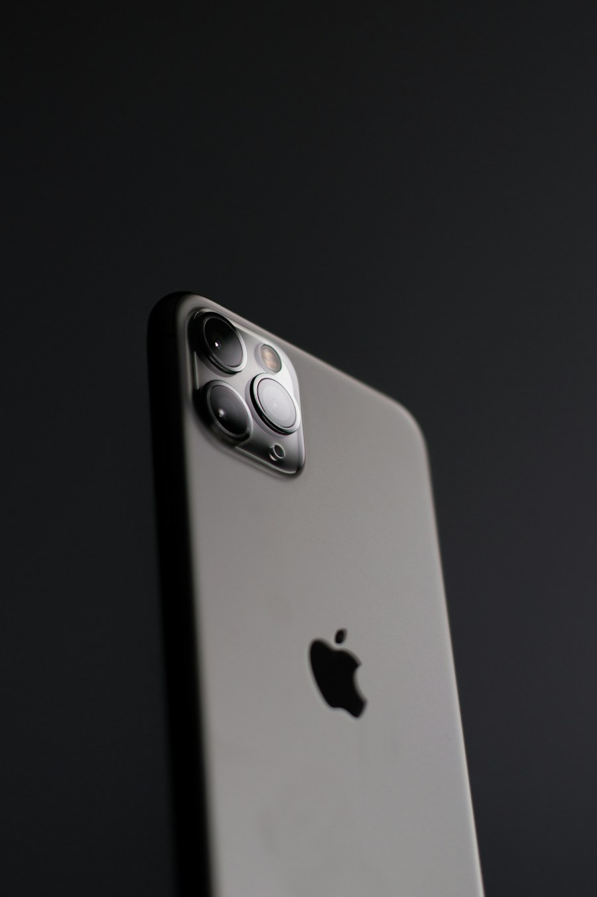

本期主角 iPhone 15 Pro
精选好机
¥ 3,680 起
¥ 3,680 起
成色如实描述
安心看得见
安心看得见
GOOD
AGAIN
AGAIN
把旧的喜欢，变成新的开始严选好机 · 透明好价 · 循环好生活
买得放心好手机，不该靠运气。
32 项专业检测功能、屏幕、电池逐项确认
实拍呈现成色划痕瑕疵，页面提前说清
7 天无忧退换收到不满意，退换有保障
↗THE GOOD FINDS
给好机，找个新主人。
值得入手的精选二手机0 台在售
展示 12 / 12 件精选好机
01 — 每一处细节，都值得确认看得见的好，才是真的好。
THE SHIJI STANDARD认真检测，
看看正在出售的好机 ↗
认真检测，
是对喜欢的尊重。
从屏幕显示到电池健康，从摄像头到每一个接口，我们把看不见的细节也逐一检查。你收到的，不只是一个好价格，还有一份安心。
32项专业检测项目
100%功能逐台验证
7天无忧退换保障